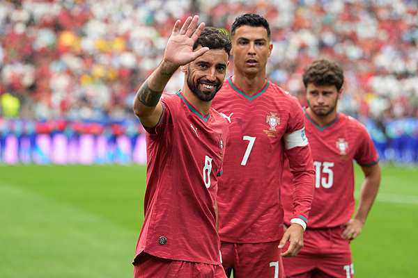

'Crystallised' Fans — The Extremism of Ronaldo Stans
The 'crystal-fan' formation: In the Chinese football sphere, the slang 'crystal' (literally 'crystallised residue') refers to those fans who, after repeated 'face-plants' by their idol, remain die-hard loyalists. Ronaldo's extremist diehards are dubbed 'Ronaldo-crystals', with distinctly derogatory overtones — the depth of their fandom has become a signature phenomenon of Chinese fan culture.
Normalised online violence: According to Tencent News and others, a section of Ronaldo's extremist fans engages in systematic online violence — repeatedly attacking Messi and his fans, morally blackmailing the entire Portugal squad into 'fighting for Ronaldo', and verbally besieging teammates who don't fall into line. The intensity is staggering.
Fan-camp mutual tearing: The infighting between Messi and Ronaldo fan camps escalates by the day — from debates about skill to personal attacks, from stat comparison to family humiliation. Platforms like Sina have noted that this 'daily polarisation' has become a typical case of sports fan-cult violence; South China Normal University has even folded it into academic papers.
Influencer-stoked flamewars: A single remark from a big streamer like 'Li Laoba' — 'Messi's technique crushes Ronaldo' — can trigger large-scale confrontations between the two fan camps. Engagement influencers deliberately manufacture division to harvest emotion, while fans gladly become the emotional leeks being harvested.
Weak rational voices: On Douban, Reddit and elsewhere there are also fans urging 'don't be like the Ronaldo-crystals, an NC fandom', conceding Ronaldo's greatness does not require diminishing Messi. But under extremist noise, rational voices are quickly drowned out.
Idol misconduct ricochets: Fans are mirrors of their idols. Ronaldo's repeated public arrogance and veiled digs at Messi have implicitly provided behavioural templates for his extremist fans. When the idol himself does not restrain himself, expecting fans to be rational is wishful thinking.